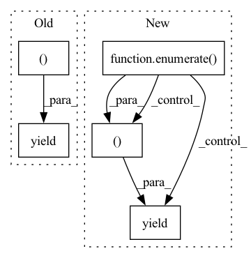

Pattern ID :31852
Before Change
header, table_data = _load_table_data(os.path.join(data_dir, item["table_file"]))
item["table_header"] = header
item["table_data"] = table_data
yield item["id"], item
After Change
Yields examples.
with open(filepath, encoding="utf-8") as f:
reader = csv.DictReader(f, delimiter="\t")
for idx, item in enumerate( reader) :
item["answer_text"] = _parse_answer_text(item["answer_text"])
item["answer_coordinates"] = _parse_answer_coordinates(item["answer_coordinates"])
header, table_data = _load_table_data(os.path.join(data_dir, item["table_file"]))
item["table_header"] = header
item["table_data"] = table_data
yield idx, item
In pattern: SUPERPATTERN
Frequency: 3
Non-data size: 5
Instances Fragment ID: 93105000
Project Name: huggingface/datasets
Commit Name: 3538e4e5ad595225c854e59d10736876da4a6d45
Time: 2022-02-22
Author: 8515462+albertvillanova@users.noreply.github.com
File Name: datasets/msr_sqa/msr_sqa.py
M Class Name: MsrSQA
N Class Name: MsrSQA
M Method Name: _generate_examples(3)
N Method Name: _generate_examples(3)
M Parent Class: datasets.GeneratorBasedBuilder
N Parent Class: datasets.GeneratorBasedBuilder
M File Name: datasets/msr_sqa/msr_sqa.py
N File Name: datasets/msr_sqa/msr_sqa.py
M Start Line: 158
M End Line: 166
N Start Line: 157
N End Line: 164
Before Change
def _generate_examples(self, split_key, data_dir):
Yields examples for a given split of dataset.
split_text, split_labels = self._get_examples_from_split(split_key, data_dir)
for text, label in zip(split_text, split_labels):
data_key = split_key + "_" + text
feature_dict = {"text": text, "label": label}
yield data_key, feature_dict
After Change
def _generate_examples(self, split_key, data_dir):
Yields examples for a given split of dataset.
split_text, split_labels = self._get_examples_from_split(split_key, data_dir)
for id_, (text, label) in enumerate( zip(split_text, split_labels)) :
feature_dict = {"text": text, "label": label}
yield id_, feature_dict
Fragment ID: 93105001
Project Name: huggingface/datasets
Commit Name: 1b2f421c61f894413ea9e6d5d8c5240c14f38e8d
Time: 2021-05-07
Author: 42851186+lhoestq@users.noreply.github.com
File Name: datasets/onestop_english/onestop_english.py
M Class Name: OnestopEnglish
N Class Name: OnestopEnglish
M Method Name: _generate_examples(3)
N Method Name: _generate_examples(3)
M Parent Class: datasets.GeneratorBasedBuilder
N Parent Class: datasets.GeneratorBasedBuilder
M File Name: datasets/onestop_english/onestop_english.py
N File Name: datasets/onestop_english/onestop_english.py
M Start Line: 131
M End Line: 134
N Start Line: 131
N End Line: 133
Before Change
Yields examples.
// TODO(openBookQA): Yields (key, example) tuples from the dataset
with open(filepath, encoding="utf-8") as f:
for row in f:
data = json.loads(row)
yield data["id"], {
"id": data["id"],
"question_stem": data["question"]["stem"],
"choices": {
"text": [choice["text"] for choice in data["question"]["choices"]],
"label": [choice["label"] for choice in data["question"]["choices"]],
},
"answerKey": data["answerKey"],
}
After Change
def _generate_examples(self, filepath):
Yields examples.
with open(filepath, encoding="utf-8") as f:
for uid, row in enumerate( f) :
data = json.loads(row)
example = {
"id": data["id"],
"question_stem": data["question"]["stem"],
"choices": {
"text": [choice["text"] for choice in data["question"]["choices"]],
"label": [choice["label"] for choice in data["question"]["choices"]],
},
"answerKey": data["answerKey"],
}
if self.config.name == "additional":
for key in ["fact1", "humanScore", "clarity", "turkIdAnonymized"]:
example[key] = data[key]
yield uid, example
Fragment ID: 93105002
Project Name: huggingface/datasets
Commit Name: 86995fd86308e34f732cd3a3deb9a4e0cc8945cf
Time: 2022-05-06
Author: 8515462+albertvillanova@users.noreply.github.com
File Name: datasets/openbookqa/openbookqa.py
M Class Name: Openbookqa
N Class Name: Openbookqa
M Method Name: _generate_examples(2)
N Method Name: _generate_examples(2)
M Parent Class: datasets.GeneratorBasedBuilder
N Parent Class: datasets.GeneratorBasedBuilder
M File Name: datasets/openbookqa/openbookqa.py
N File Name: datasets/openbookqa/openbookqa.py
M Start Line: 155
M End Line: 166
N Start Line: 144
N End Line: 159